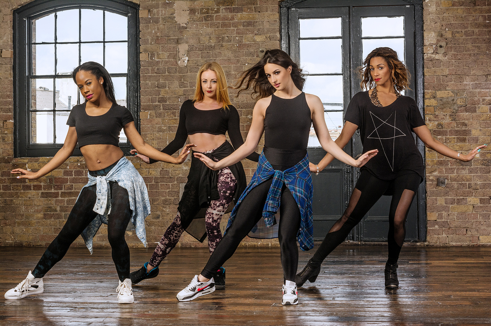

Современные танцы - танцевальные стили, популярные в настоящее время, отвечающие актуальным веяниям в музыке. Эти танцы могут быть созданы 60, 40, 10 лет назад, но благодаря динамичности развития, остаются востребованы в кругах танцоров и сегодня.
Есть много разных видов танцев. В этой статье все они будут подробно рассмотрены лишь некоторые из них
Hip-Hop
Хип-хоп —одно из наиболее популярных направлений в молодежной танцевальной культуре. Он сочетает в себе ритмичную и мелодичную основы, включает прыжки, трюки и вместе с тем плавные, слаженные движения. Этому динамичному танцу сейчас учат во многих танцевальных школах по всему миру. Но какова же история хип-хопа?
История возникновения
Место и время рождения этого направления в хореографии известны точно. История возникновения танца хип-хоп берет свое начало в 1967 году в Южном Бронксе — самом неблагополучном районе Нью-Йорка. Как раз в это время сюда приехал ямайский диджей по прозвищу Кул Герк. Он организовывал вечеринки, а на них читал речитатив одновременно с проигрыванием пластинок, что потом дало толчок для развития рэпа.
А еще Кул Герк ввел понятие брейков — музыкальных перерывов, во время которых танцоры выходили в круг и показывали свои умения. Их танец представлял собой резкие движения с элементами акробатики. Примечательно, что уже тогда он не был бессмысленным. Танцоры старались рассказать им свою историю, показать свое осмысление жизни и даже раскритиковать ее негативные моменты. Так и проявился хип-хоп.
А вот свое название этот танец получил в 1974 году благодаря диджею Африке Бамбааттее. Для обозначения танца он взял слова из афроамериканского диалекта, где «хип» используется для обозначения рук и ног, а «хоп» означает «прыгать».
На протяжении последующих десятилетий популярность хип-хопа неуклонно росла. Танец развивался и менялся, приобретал новые элементы и обзаводился новыми приемами. Со временем из хип-хопа вышли такие известные стили как брейк-данс, поппинг и локинг. А сам танец практиковался уже не только на улицах, но и в хореографических школах. Даже хореографы, работающие в классическом стиле, стали приглашать хип-хоп танцоров для участия в своих танцевальных номерах.
Со временем хип-хоп вышел за пределы США и распространился по всему миру. Танцевальные конкурсы и соревнования хип-хоп танцоров сегодня проходят в самых разных странах. А каждый желающий обучится этому танцу без проблем найдет школу хореографии себе по душе.
Dancehall
Dancehall — это уличный ямайский танец, который включает в себя множество социальных танцев и, обязательно, attitude (подача, характер). Изучение стиля начинается с его корней: базовые степы, пришедшие к нам. Степы складываются в простые рутины, либо в обыгрывающие музыку хореографии.
Танцевальные степы Dancehall создаются спонтанно, во время уличных вечеринок. Иногда трудно сказать, кто создал танец и какую версию он выполнил. В Интернете есть много версий, главное - получить представление о танце. Сейчас множество представителей дансхолл культуры из России создаются свои степы - DHQ LUA, Fraules, Kate WOW и др.
История возникновения
Дэнсхолл - это модное музыкальное течение, зародившееся в 60-х годах прошлого столетия. Именно на улицах Кингстона (столица Ямайки) создавались новые музыкальные ритмы и техники движений. Причиной создания столь модного течения стало социальное расслоение населения Ямайки: поскольку переселенцы из Европы считались более зажиточными и богатыми людьми, то эмигранты из Африки, мулаты и метисы принадлежали в основном к беднейшим прослойкам общества.
Поэтому такое классовое неравенство не могло не затронуть умы обделенных людей: для них дэнсхолл - это способ объединения африканского народа на чужой территории. Именно африканский народ сыграл наибольшую роль в создании нового течения.
Jazz-Funk

Jazz-funk – современный танцевальный стиль, спонтанно сформировавшийся около 20 лет назад в США, заимствуя отдельные элементы джазовой хореографии, хип-хопа, стрип-пластики, эстрадной хореографии и вакинга. Это танец контрастов, где отрывистые, резкие движения неожиданно сменяются мягкими и плавными, поглощая внимание зрителей.
Это выраженная в танце креативность, экспрессивность. Несмотря на то, что джаз-фанк вобрал в себя техники разных современных танцевальных направлений, этот стиль имеет свое лицо. Ему присущи разнообразие изолированных движений, волн, импульсов и шагов. Чёткие ритмичные движения плавно переходят друг в друга. Каждый танцор привносит в этот стиль танца свою неповторимую индивидуальность души, характера и эмоций.
Многие американские звезды эстрады сегодня танцуют именно в этом стиле – Бритни Спирс, Бейонсе, Кристина Агилера, Джанет Джексон. В эпатажных выступлениях Леди Гага с группой танцоров легко узнаваемы элементы джаз-фанка.
Jazz-funk позволяет выражать эмоции, он преисполнен дерзости, манерности и особенной красоты.
История возникновения
Танцевальный стиль Jazz Funk возник примерно двадцать лет назад в США. Его «отцом» стал американский хореограф Бобби Ньюбери, работавший на тот момент с несколькими звездами мировой величины. Ньюбери неожиданно для себя принял решение соединить несколько танцевальных направлений в одно целое. Так и появился оригинальный, ни на что не похожий и яркий стиль Jazz Funk.
Contemporary
Контемпорари (англ. contemporary dance) — современный сценический танец, включающий в себя самые различные направления и техники. Контемп часто называют танцем души. И не мудрено, ведь именно данное направление хореографии позволяет не просто выполнять танцевальные па, но и «говорить» с помощью тела.
В контемпе очень большую роль играет связь между внутренним состоянием танцора и отображением его в танце. «Правильный» танец в стиле контемпорари – это не столько техничность и четкость хореографии, сколько соответствие движений тела мироощущению танцора, умение донести информационное (душевное) послание до зрителя.
История возникновения
Многие источники утверждают, что рождение контемпа, как танцевального направления, произошло на западе еще в 50-х годах прошлого столетия. Однако, если углубиться в историю возникновения контемпорари дэнс, становится ясно, что назвать конкретную дату и место, где впервые станцевали данный танец, невозможно. Согласно одним источникам родиной контемпа является Америка, другие называют Центральную Европу. Существуют даже мнение, что прародителями контемпа стали восточные техники (йога, тай цзи и др.), а значит, появилось данное танцевальное направление на Востоке. Однако, где бы территориально не находились первоисточники контемпа, в современном мире его танцуют повсеместно. А в хореографии самого танца встречаются элементы как западных танцевальных направлений (модерн, джаз, эстрадные и народные танцы, классический балет), так и восточных техник и культур (йога, элементы боевых искусств). Одной же из главных идей контемпа является возможность танцора отойти от классических догм хореографии и выразить себя с помощью «свободного» танца.
На сегодняшний день, контемп является одним из самых популярных танцевальных направлений в мире. Проводятся различные конкурсы, соревнования, чемпионаты, как на региональном, так и на международном уровнях. Данное направление активно преподается в танцевальных школах. Постановки в стиле контемп срывают овации на многочисленных танцевальных шоу во всем мире.